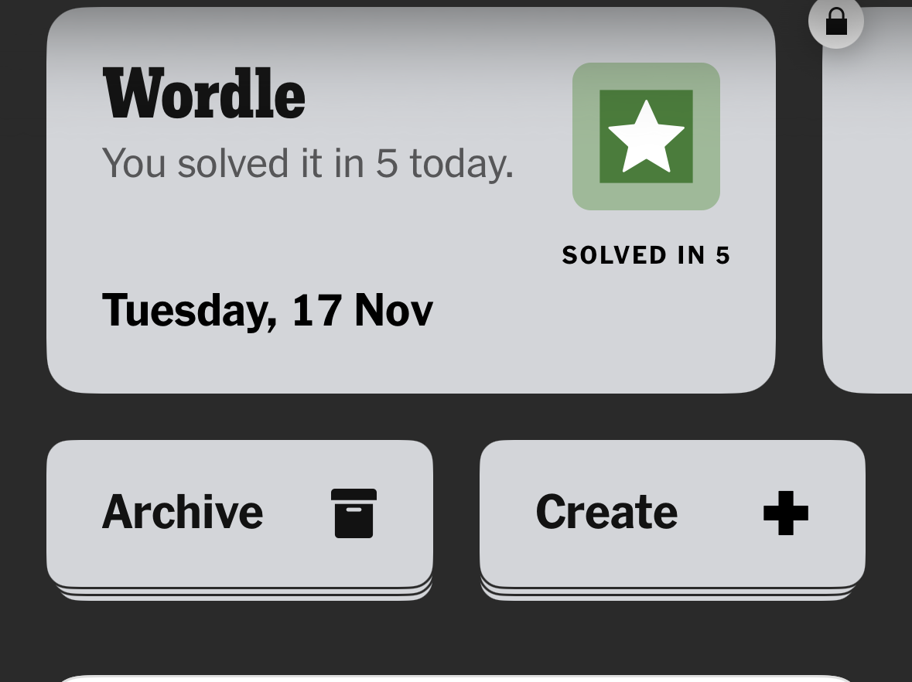

Agrima's Side Quests
A chaotic collection of my projects and hobbies!

Video Editing Content Creator
I independently run a content creation TikTok account where I produce and post video edits of characters and celebrities prevalent in pop culture. I have amassed 448,930 views, 74,900 likes and 1,068 followers! I use video editing softwares like Alight Motion and Adobe After Effects.

Movie-watching!
I maintain a film review account on Letterboxd, a social platform for film lovers. It allows users to track, rate, review, and list films they have watched. In 2025, I have logged 50 films, reviewed 37 films and watched 101 hours of cinema!

Puzzles and Problem Solving
New York Time Games are a collection of daily word, logic and number puzzles published by the New York Times. As a part of my daily routine, I solve these puzzles daily to challenge myself. Wordle is a word game where players have six attempts to guess a random five-letter word. I have solved 558 Wordle puzzles, have a 76% win rate and my longest streak of puzzle-solving was 15 days. I also regularly play the other games offered by NYT, such as Connections and Strands.